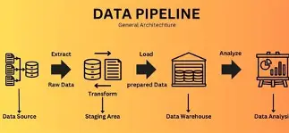

Data Scientist • Machine Learning • Python • SQL • Power BI Developer
Fine-tuned a Llama-3.2-3B-Instruct model on institutional course specification data using LoRA and 4-bit quantisation, then built a hybrid retrieval-augmented generation pipeline (FAISS + BM25) with an agentic decision layer that dynamically chose whether to retrieve, generate, or enhance responses. Achieved a 1.00 Hits@3 retrieval accuracy, a 0.00 hallucination rate, and an average human evaluation score of 8.25/10 for relevance, fluency, and completeness. Completed May 2025.
View on GitHubCombined NHS attendance, government travel-time, and Index of Multiple Deprivation datasets to investigate drivers of missed hospital appointments. Applied K-means clustering to group areas by travel time and deprivation, finding that transport accessibility was a significant driver for one high-travel-time cluster while deprivation was the stronger driver overall, informing targeted service-planning recommendations. Completed December 2024.
View on GitHub
Designed and built an end-to-end analytics engineering pipeline processing twelve months of NHS England A&E attendance data. Developed a Python ETL pipeline (pandas, SQLAlchemy) to extract, clean, and validate monthly data, loading it into a three-layer PostgreSQL medallion architecture modelled as a dimensional star schema with an upsert pattern for revised source data. Built a reusable SQL validation suite and delivered a Power BI dashboard finding that Major Emergency Departments account for over 99.5% of national emergency admissions and consistently underperform against the four-hour treatment target.
View on GitHubBuilt and compared seven classification models, including Logistic Regression, Random Forest, and XGBoost, to predict purchase propensity from website engagement data. Addressed class imbalance with SMOTE and tuned models via GridSearch and Optuna, prioritising precision over recall to minimise wasted ad spend on uninterested customers. Completed May 2024.
View on GitHubTrained an SVM classifier to predict bank customer churn, then audited it for gender bias using accuracy, precision, recall, and positive-rate metrics across demographic groups. Identified a significant fairness gap (recall of 0.49 for male customers vs. 0.86 for female customers) that accuracy alone did not reveal, and evaluated the effect of SMOTE resampling on the underlying gender balance of the training data.
View on GitHubAnalysed dementia prevalence across NHS England to identify demographic, geographic, and care-setting inequalities. Using official NHS primary care data, the Power BI dashboard examines variation by age, sex, ethnicity, residential care status, NHS regions, and Integrated Care Boards (ICBs), translating complex healthcare data into insights that support targeted service planning and evidence-based policy development. Completed January 2026.
View on GitHub